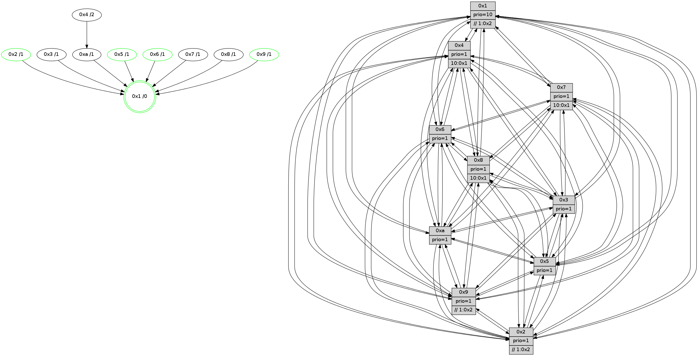

>> << IDX [start] -100 -25 -5 +0 +5 +25 +100 [950.126420021]
 Previous packets
----------------------------------------------------------------------
945.397634 beacon01(faad) #0 coord=01,02,03,04,05,06,07,0a,09,08 cycle=688.0ms assoc
-- color-indic=1 64 a7 df
945.407617 beacon02(faad) #0 coord=01,02,03,04,05,06,07,0a,09,08 cycle=688.0ms assoc 64 34 ee
945.417617 beacon03(faad) #0 coord=01,02,03,04,05,06,07,0a,09,08 cycle=688.0ms assoc 64 4e a3
945.427618 beacon04(faad) #0 coord=01,02,03,04,05,06,07,0a,09,08 cycle=688.0ms assoc 64 39 49
945.437618 beacon05(faad) #0 coord=01,02,03,04,05,06,07,0a,09,08 cycle=688.0ms assoc 64 43 04
945.447617 beacon06(faad) #0 coord=01,02,03,04,05,06,07,0a,09,08 cycle=688.0ms assoc 64 cd d3
945.457618 beacon07(faad) #0 coord=01,02,03,04,05,06,07,0a,09,08 cycle=688.0ms assoc 64 b7 9e
945.467623 beacon0a(faad) #0 coord=01,02,03,04,05,06,07,0a,09,08 cycle=688.0ms assoc 64 c6 95
945.477622 beacon09(faad) #0 coord=01,02,03,04,05,06,07,0a,09,08 cycle=688.0ms assoc 64 48 42
945.487622 beacon08(faad) #0 coord=01,02,03,04,05,06,07,0a,09,08 cycle=688.0ms assoc 64 32 0f
945.499481 [Hello(4): seq=604 sym=5,7,6,2,3,9,8,10,1 sysInfo= stat=5:13,13,12,10/7:6,9,14,6/6:8,0,9,9/2:13,12,6,9/3:5,9,8,7/9:7,4,1,7/8:3,2,2,1/10:10,10,3,9/1:7,6,14,1]
945.503402 [Hello(7): seq=604 sym=2,3,5,6,4,8,9,10,1 sysInfo=hasWarning stat=2:15,7,8,12/3:14,12,15,11/5:1,6,4,14/6:13,2,0,6/4:1,14,14,1/8:5,6,2,0/9:2,2,0,0/10:1,9,5,1/1:15,12,12,0]
945.506083 [Hello(8): seq=548 sym=5,2,3,4,9,6,7,10,1 sysInfo=hasWarning stat=5:3,11,1,11/2:2,7,12,4/3:5,15,11,11/4:5,10,10,7/9:2,3,0,0/6:6,11,9,10/7:4,5,0,0/10:1,5,3,0/1:7,3,11,0]
945.510214 [Hello(10): seq=537 sym=6,2,3,8,7,5,9,4,1 sysInfo=hasWarning stat=6:3,13,14,4/2:9,7,11,4/3:2,2,6,7/8:13,9,3,0/7:4,6,0,0/5:6,8,0,11/9:1,4,0,0/4:14,14,3,7/1:2,0,15,1]
945.514118 [Color(1) seq=285 @0:0 prio=10 >>1.@2,1.@3,1.@5]
----------------------------------------------------------------------
946.185765 beacon01(faad) #0 coord=01,02,03,04,05,06,07,0a,09,08 cycle=688.0ms assoc
-- color-indic=1 64 63 d1
946.195747 beacon02(faad) #0 coord=01,02,03,04,05,06,07,0a,09,08 cycle=688.0ms assoc 64 f0 e0
946.205747 beacon03(faad) #0 coord=01,02,03,04,05,06,07,0a,09,08 cycle=688.0ms assoc 64 8a ad
946.215747 beacon04(faad) #0 coord=01,02,03,04,05,06,07,0a,09,08 cycle=688.0ms assoc 64 fd 47
946.225749 beacon05(faad) #0 coord=01,02,03,04,05,06,07,0a,09,08 cycle=688.0ms assoc 64 87 0a
946.235750 beacon06(faad) #0 coord=01,02,03,04,05,06,07,0a,09,08 cycle=688.0ms assoc 64 09 dd
946.245749 beacon07(faad) #0 coord=01,02,03,04,05,06,07,0a,09,08 cycle=688.0ms assoc 64 73 90
946.255753 beacon0a(faad) #0 coord=01,02,03,04,05,06,07,0a,09,08 cycle=688.0ms assoc 64 02 9b
946.265752 beacon09(faad) #0 coord=01,02,03,04,05,06,07,0a,09,08 cycle=688.0ms assoc 64 8c 4c
946.275754 beacon08(faad) #0 coord=01,02,03,04,05,06,07,0a,09,08 cycle=688.0ms assoc 64 f6 01
946.287019 [Hello(1): seq=514 sym=4,2,9,5,10,3,8,6,7 sysInfo=coloring-mode-on,ColoringModeRequestCalled stat=4:13,6,14,1/2:11,11,13,11/9:9,6,13,5/5:5,11,4,4/10:12,8,9,2/3:12,0,9,2/8:13,1,6,0/6:9,11,9,10/7:6,4,12,11]
946.291087 [Color(4) seq=210 @0:0 prio=1 >10.@1,1.@2,1.@3,1.@5]
946.293188 [Hello(2): seq=601 sym=4,7,6,3,9,8,10,1 asym=5 sysInfo=hasWarning stat=4:10,1,4,5/7:9,5,1,9/6:11,6,9,8/3:7,15,7,5/9:7,7,10,4/8:13,0,6,8/10:12,3,10,9/1:13,5,14,1/5:10,1,4,0]
946.297368 [Color(2) seq=250 @0:0 prio=1 >>1.@2,1.@3,1.@5]
946.301601 [Hello(6): seq=605 sym=2,3,5,4,7,9,8,10,1 sysInfo= stat=2:4,7,6,8/3:3,11,15,9/5:14,3,13,12/4:1,8,5,1/7:15,4,12,5/9:7,8,13,4/8:12,5,10,1/10:14,15,4,10/1:15,11,11,1]
946.305062 [Color(6) seq=237 @0:0 prio=1]
946.308437 [Hello(3): seq=605 sym=1,7,6,2,4,8,9,10,5 sysInfo= stat=1:0,0,4,0/7:8,7,6,7/6:3,6,10,2/2:1,11,11,9/4:4,0,13,6/8:11,14,6,1/9:14,0,8,10/10:6,4,7,2/5:8,3,4,10]
946.317795 [Hello(5): seq=605 sym=7,6,4,3,1,9,8,10,2 sysInfo=hasWarning stat=7:2,4,1,8/6:1,2,1,0/4:1,1,14,7/3:10,5,6,9/1:15,7,0,1/9:12,12,12,4/8:15,14,10,8/10:11,0,6,4/2:0,1,0,0]
946.322844 [Color(5) seq=258 @0:0 prio=1]
----------------------------------------------------------------------
946.973898 beacon01(faad) #0 coord=01,02,03,04,05,06,07,0a,09,08 cycle=688.0ms assoc
-- color-indic=1 64 df d4
946.983881 beacon02(faad) #0 coord=01,02,03,04,05,06,07,0a,09,08 cycle=688.0ms assoc 64 4c e5
946.993881 beacon03(faad) #0 coord=01,02,03,04,05,06,07,0a,09,08 cycle=688.0ms assoc 64 36 a8
947.003882 beacon04(faad) #0 coord=01,02,03,04,05,06,07,0a,09,08 cycle=688.0ms assoc 64 41 42
947.013880 beacon05(faad) #0 coord=01,02,03,04,05,06,07,0a,09,08 cycle=688.0ms assoc 64 3b 0f
947.023881 beacon06(faad) #0 coord=01,02,03,04,05,06,07,0a,09,08 cycle=688.0ms assoc 64 b5 d8
947.033882 beacon07(faad) #0 coord=01,02,03,04,05,06,07,0a,09,08 cycle=688.0ms assoc 64 cf 95
947.043886 beacon0a(faad) #0 coord=01,02,03,04,05,06,07,0a,09,08 cycle=688.0ms assoc 64 be 9e
947.053886 beacon09(faad) #0 coord=01,02,03,04,05,06,07,0a,09,08 cycle=688.0ms assoc 64 30 49
947.063887 beacon08(faad) #0 coord=01,02,03,04,05,06,07,0a,09,08 cycle=688.0ms assoc 64 4a 04
947.076321 [Hello(9): seq=549 sym=2,5,3,4,7,6,8,1 sysInfo=hasWarning stat=2:2,15,12,2/5:4,14,9,2/3:1,10,8,11/4:5,15,7,7/7:8,14,12,8/6:2,12,1,8/8:6,4,13,1/1:11,3,15,1]
947.078848 [Hello(10): seq=538 sym=6,2,3,8,7,5,9,4,1 sysInfo=hasWarning stat=6:4,14,14,4/2:10,8,11,4/3:3,2,6,7/8:13,9,3,0/7:4,6,0,0/5:7,9,0,11/9:1,4,0,0/4:14,15,3,7/1:3,1,15,1]
947.085235 [Color(1) seq=286 @0:0 prio=10 >>1.@2,1.@3,1.@5]
947.088438 [Hello(7): seq=605 sym=2,3,5,6,4,8,9,10,1 sysInfo=hasWarning stat=2:0,8,8,12/3:15,12,15,11/5:2,7,4,14/6:14,3,0,6/4:1,15,14,1/8:6,6,2,0/9:2,2,0,0/10:2,9,5,1/1:0,13,12,0]
947.097849 [Hello(8): seq=549 sym=5,2,3,4,9,6,7,10,1 asym= sysInfo=hasWarning stat=5:4,12,1,11/2:3,8,12,4/3:6,15,11,11/4:5,11,10,7/9:2,3,0,0/6:7,12,9,10/7:4,5,0,0/10:1,5,3,0/1:8,4,11,0]
----------------------------------------------------------------------
947.762030 beacon01(faad) #0 coord=01,02,03,04,05,06,07,0a,09,08 cycle=688.0ms assoc
-- color-indic=1 64 eb cc
947.772013 beacon02(faad) #0 coord=01,02,03,04,05,06,07,0a,09,08 cycle=688.0ms assoc 64 78 fd
947.782012 beacon03(faad) #0 coord=01,02,03,04,05,06,07,0a,09,08 cycle=688.0ms assoc 64 02 b0
947.792013 beacon04(faad) #0 coord=01,02,03,04,05,06,07,0a,09,08 cycle=688.0ms assoc 64 75 5a
947.802013 beacon05(faad) #0 coord=01,02,03,04,05,06,07,0a,09,08 cycle=688.0ms assoc 64 0f 17
947.812011 beacon06(faad) #0 coord=01,02,03,04,05,06,07,0a,09,08 cycle=688.0ms assoc 64 81 c0
947.822013 beacon07(faad) #0 coord=01,02,03,04,05,06,07,0a,09,08 cycle=688.0ms assoc 64 fb 8d
947.832017 beacon0a(faad) #0 coord=01,02,03,04,05,06,07,0a,09,08 cycle=688.0ms assoc 64 8a 86
947.842017 beacon09(faad) #0 coord=01,02,03,04,05,06,07,0a,09,08 cycle=688.0ms assoc 64 04 51
947.852018 beacon08(faad) #0 coord=01,02,03,04,05,06,07,0a,09,08 cycle=688.0ms assoc 64 7e 1c
947.864560 [Hello(1): seq=515 sym=4,2,9,5,10,3,8,6,7 sysInfo=coloring-mode-on,ColoringModeRequestCalled stat=4:13,7,14,1/2:12,12,13,11/9:10,6,13,5/5:6,12,4,4/10:12,8,9,2/3:13,0,9,2/8:14,1,6,0/6:10,12,9,10/7:7,4,12,11]
947.867289 [Hello(5): seq=606 sym=7,6,4,3,1,9,8,10,2 sysInfo=hasWarning stat=7:3,4,1,8/6:1,2,1,0/4:2,1,14,7/3:10,5,6,9/1:0,8,0,1/9:13,12,12,4/8:0,14,10,8/10:12,0,6,4/2:0,1,0,0]
947.871088 [Color(5) seq=259 @0:0 prio=1]
947.872329 [Hello(3): seq=606 sym=1,7,6,2,4,8,9,10,5 sysInfo= stat=1:0,1,5,0/7:9,7,6,7/6:3,6,10,2/2:1,11,11,9/4:4,0,13,6/8:12,14,6,1/9:15,0,8,10/10:7,4,7,2/5:9,4,4,10]
947.876762 [STC(3)->1 #0.125 tree-change,inconsistent-stability,to-color d=1]
947.878055 [Color(4) seq=211 @0:0 prio=1 >10.@1,1.@2,1.@3,1.@5]
947.880420 [Hello(2): seq=602 sym=4,5,7,6,3,9,8,10,1 sysInfo=hasWarning stat=4:11,1,4,5/5:11,2,4,0/7:10,5,1,9/6:12,7,9,8/3:8,15,7,5/9:8,7,10,4/8:14,0,6,8/10:13,3,10,9/1:14,6,14,1]
947.885475 [Color(2) seq=251 @0:0 prio=1 >>1.@2,1.@3,1.@5]
947.889170 [STC(10)->1 #0.125 tree-change,inconsistent-stability,to-color d=1]
947.895983 [Hello(6): seq=606 sym=2,3,5,4,7,9,8,10,1 sysInfo= stat=2:4,7,6,8/3:4,11,15,9/5:15,4,13,12/4:1,8,5,1/7:0,4,12,5/9:8,8,13,4/8:13,5,10,1/10:15,15,4,10/1:0,12,12,1]
947.900404 [STC(6)->1 #0.125 tree-change,inconsistent-stability,stable,to-color d=1]
947.903954 [Color(6) seq=238 @0:0 prio=1]
----------------------------------------------------------------------
948.550159 beacon01(faad) #0 coord=01,02,03,04,05,06,07,0a,09,08 cycle=688.0ms assoc
-- color-indic=1 64 57 c9
948.560142 beacon02(faad) #0 coord=01,02,03,04,05,06,07,0a,09,08 cycle=688.0ms assoc 64 c4 f8
948.570142 beacon03(faad) #0 coord=01,02,03,04,05,06,07,0a,09,08 cycle=688.0ms assoc 64 be b5
948.580143 beacon04(faad) #0 coord=01,02,03,04,05,06,07,0a,09,08 cycle=688.0ms assoc 64 c9 5f
948.590142 beacon05(faad) #0 coord=01,02,03,04,05,06,07,0a,09,08 cycle=688.0ms assoc 64 b3 12
948.600142 beacon06(faad) #0 coord=01,02,03,04,05,06,07,0a,09,08 cycle=688.0ms assoc 64 3d c5
948.610142 beacon07(faad) #0 coord=01,02,03,04,05,06,07,0a,09,08 cycle=688.0ms assoc 64 47 88
948.620148 beacon0a(faad) #0 coord=01,02,03,04,05,06,07,0a,09,08 cycle=688.0ms assoc 64 36 83
948.630148 beacon09(faad) #0 coord=01,02,03,04,05,06,07,0a,09,08 cycle=688.0ms assoc 64 b8 54
948.640148 beacon08(faad) #0 coord=01,02,03,04,05,06,07,0a,09,08 cycle=688.0ms assoc 64 c2 19
948.651968 [Hello(8): seq=550 sym=5,2,3,4,9,6,7,10,1 sysInfo=hasWarning stat=5:5,13,1,11/2:4,9,12,4/3:7,15,12,11/4:5,12,10,7/9:2,3,0,0/6:8,13,10,10/7:4,5,0,0/10:1,5,4,0/1:9,4,11,0]
948.654885 [Hello(4): seq=606 sym=5,7,6,2,3,9,8,10,1 sysInfo= stat=5:14,14,12,10/7:8,9,14,6/6:10,2,10,9/2:15,14,6,9/3:6,9,8,7/9:8,4,1,7/8:5,2,2,1/10:10,10,4,9/1:9,8,14,1]
948.657526 [Hello(10): seq=539 sym=6,2,3,8,7,5,9,4,1 sysInfo=hasWarning stat=6:5,15,15,4/2:10,8,11,4/3:3,2,6,7/8:14,9,3,0/7:5,6,0,0/5:7,9,0,11/9:1,4,0,0/4:14,15,3,7/1:3,2,0,1]
948.659963 [STC(4)->10-.->1 #0.125 to-color d=2]
948.663275 [Color(1) seq=287 @0:0 prio=10 >>1.@2,1.@3,1.@5]
948.666108 [Hello(9): seq=550 sym=2,5,3,4,7,6,8,10,1 sysInfo=hasWarning stat=2:3,0,12,2/5:5,15,9,2/3:2,10,9,11/4:6,0,7,7/7:9,14,12,8/6:3,13,2,8/8:7,4,13,1/10:0,0,1,0/1:12,4,15,1]
948.670739 [Hello(7): seq=606 sym=2,3,5,6,4,8,9,10,1 sysInfo=hasWarning stat=2:1,9,8,12/3:0,12,0,11/5:3,8,4,14/6:15,4,1,6/4:1,0,14,1/8:7,6,2,0/9:2,2,0,0/10:2,9,6,1/1:1,13,12,0]
----------------------------------------------------------------------
949.338290 beacon01(faad) #0 coord=01,02,03,04,05,06,07,0a,09,08 cycle=688.0ms assoc
-- color-indic=1 64 93 c7
949.348272 beacon02(faad) #0 coord=01,02,03,04,05,06,07,0a,09,08 cycle=688.0ms assoc 64 00 f6
949.358272 beacon03(faad) #0 coord=01,02,03,04,05,06,07,0a,09,08 cycle=688.0ms assoc 64 7a bb
949.368273 beacon04(faad) #0 coord=01,02,03,04,05,06,07,0a,09,08 cycle=688.0ms assoc 64 0d 51
949.378273 beacon05(faad) #0 coord=01,02,03,04,05,06,07,0a,09,08 cycle=688.0ms assoc 64 77 1c
949.388274 beacon06(faad) #0 coord=01,02,03,04,05,06,07,0a,09,08 cycle=688.0ms assoc 64 f9 cb
949.398274 beacon07(faad) #0 coord=01,02,03,04,05,06,07,0a,09,08 cycle=688.0ms assoc 64 83 86
949.408279 beacon0a(faad) #0 coord=01,02,03,04,05,06,07,0a,09,08 cycle=688.0ms assoc 64 f2 8d
949.418277 beacon09(faad) #0 coord=01,02,03,04,05,06,07,0a,09,08 cycle=688.0ms assoc 64 7c 5a
949.428280 beacon08(faad) #0 coord=01,02,03,04,05,06,07,0a,09,08 cycle=688.0ms assoc 64 06 17
949.439763 [Hello(3): seq=607 sym=1,7,6,2,4,8,9,10,5 sysInfo= stat=1:0,2,5,0/7:10,7,6,7/6:4,7,11,2/2:2,12,11,9/4:5,1,13,6/8:13,14,6,1/9:0,0,8,10/10:8,4,8,2/5:9,4,4,10]
949.444565 [Hello(6): seq=607 sym=2,3,5,4,7,9,8,10,1 sysInfo= stat=2:4,7,6,8/3:4,11,15,9/5:15,4,13,12/4:2,8,5,1/7:1,4,12,5/9:9,8,13,4/8:14,5,10,1/10:0,15,4,10/1:1,13,12,1]
949.447113 [Hello(2): seq=603 sym=4,5,7,6,3,9,8,10,1 sysInfo=hasWarning stat=4:12,1,4,5/5:11,2,4,0/7:11,5,1,9/6:13,8,10,8/3:8,15,7,5/9:9,7,10,4/8:15,0,6,8/10:14,3,11,9/1:15,7,14,1]
949.451030 [Color(6) seq=239 @0:0 prio=1]
949.454379 [Hello(5): seq=607 sym=7,6,4,3,1,9,8,10,2 sysInfo=hasWarning stat=7:4,4,1,8/6:2,3,2,0/4:3,2,14,7/3:11,5,7,9/1:1,9,0,1/9:14,12,12,4/8:1,14,10,8/10:13,0,7,4/2:1,2,0,0]
949.457425 [Hello(1): seq=516 sym=4,2,9,5,10,3,8,6,7 sysInfo=coloring-mode-on,ColoringModeRequestCalled stat=4:13,8,14,1/2:13,13,13,11/9:11,6,13,5/5:7,13,4,4/10:12,8,10,2/3:14,0,10,2/8:15,1,6,0/6:11,13,10,10/7:8,4,12,11]
949.460204 [Color(5) seq=260 @0:0 prio=1]
949.469202 [Color(2) seq=252 @0:0 prio=1 >>1.@2,1.@3,1.@5]